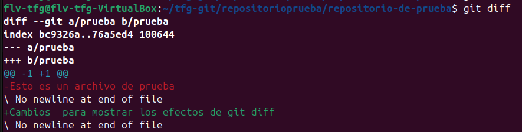
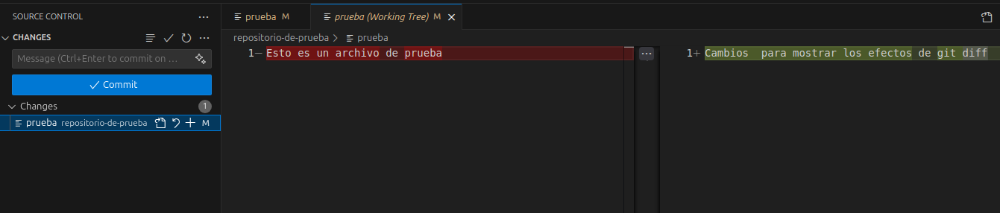

git diffSe utiliza para visualizar las diferencias entre los cambios que has hecho y lo que está en el repositorio. Muestra qué líneas han sido añadidas, eliminadas o modificadas.

Dentro de la carpeta ejecutamos lo siguiente:
git diff
Esto nos mostrará todas las diferencias entre los cambios sin preparar y la última versión guardada.Para ver las diferencias de los cambios preparados (staged):
git diff --staged
Para ver las diferencias entre dos commits:git diff (commit1) (commit2)
Para ver las diferencias de un archivo específico:git diff (nombre del archivo)

En la ventana de control de git dentro de vscode, puedes ver las diferencias haciendo click en los archivos modificados. Se te mostrará un panel con los cambios resaltados en rojo (eliminado) y verde (añadido).